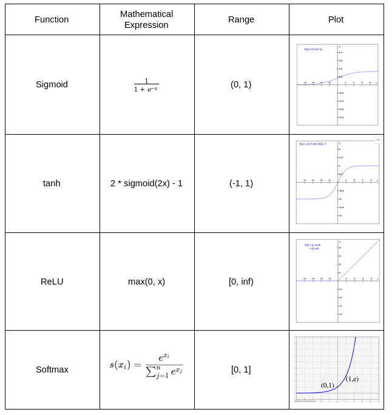

感知器与逻辑回归的区别
多层感知器是我们用于分类的最基本的神经网络之一。在二分类问题上，线性分类器的目的就是找一个超平面把正负两类分开，感知器相当于一个阶跃函数，直接区分是0还是1，而逻辑回归则是给予0到1之间的概率。当然，如果我们调节逻辑回归的阈值，使得输出非0即1，则就成了感知器。
感知器的损失函数为误分类点的函数间隔之和，函数间隔可以理解为样本与分类超平面的距离。误分类点距离分类超平面越远，则损失函数值越大。只有误分类的点会影响损失函数的值。
是分割的超平面
-
当正类数据分类到-1结果中，y=1，但超平面对应的值为-1，此时损失值大于0。
-
当负类数据分类到1结果中，y=-1，但超平面对应的值为1，此时损失值大于0。
Logistic回归的损失函数为logistic损失函数，当分类错误时，函数间隔越大，则损失函数值越大。当分类正确时，样本点距离超平面越远，则损失函数值越小。所有的样本点分布情况都会影响损失函数最后的值。模型更加平滑。
权重和偏差在神经网络中起什么作用
简单来说，权重就是某个因素的重要程度，bias值其实就是一个阈值，只有当左边部分不小于这个bias的时候，神经元的输出才会为正。
也有理解，这里的bias是所选模型自带的固有的误差，因为选的模型必不可能是完美的，bias与数据无关，是模型自带的。
并且，在有些场合里，bias的使用也没有意义，比如在batch normalization层之前的层就没必要加，因为会被归一化抵消掉。
可否令隐藏层所有神经元具有相同的bias
本质上，在每个层或每个神经元处也可以具有不同的偏差值。但是，最好对隐藏层中的所有神经元都只有一个偏差矩阵。
激活函数的作用
由于非线性的激活函数的存在，使得模型可以捕获非线性关系。如果没有激活函数，那么无论多深的网络都只是简单的线性模型，无法捕获数据中的复杂模式。
神经网络中权重初始化的值都一样会怎么样
如果所有神经元具有相同的权重值，则每个隐藏单元将获得完全相同的信号。尽管这可能在正向传播过程中起作用，但反向传播期间损失函数的导数每次都将会相同。最终模型将会欠拟合。
前向传播与反向传播的工作原理
**前向传播：**在每个隐藏层，我们计算每个节点上激活的输出，然后进一步传播到下一层，直到到达最终输出层。由于我们从输入端开始到最终输出层，因此我们向前移动，这称为前向传播。
**反向传播：**为了最小化损失函数，我们从最终损失函数开始，并通过链式法则计算每个隐藏层的梯度，返回到每个隐藏层，这时我们向后移动，因此称为反向传播。
前向传播:

反向传播:

深度学习常用的数据类型
深度学习含有从最简单的数据结构（如列表）到复杂的数据结构（如计算图）的数据类型。
**List：**元素的有序序列。
**Matrix：**具有行和列的元素的有序序列。
**Dataframe：**数据框就像矩阵一样，但是它包含实际数据，其中列名和行表示数据集中的每个数据点。
**Tensors：**张量在PyTorch和TensorFlow中都使用，就像深度学习的基本编程单元一样。就像多维数组一样，我们可以对它们执行许多数学运算。
**Computation Graphs：**计算图为我们提供了执行操作的顺序，每个节点表示神经网络中的操作或组件。
为什么要使用Batch Normalization
关于一些其他归一化方法，可以看这篇文章深度学习归一化
模型将归一化后的输入传入激活函数。
-
加快模型收敛的速度的技术。
-
解决了梯度消失的问题。
-
增加了模型泛化能力，使得dropout技术可以去掉。
例举一些激活函数

为什么CNN在图像上表现很好
CNN本质是在识别曲线和边缘信息。直接将图像数据作为输入，不仅无需人工对图像进行预处理和额外的特征抽取等复杂操作，而且以其特有的细粒度特征提取方式，使得对图像的处理达到了几近人力的水平。
为什么RNNs在文本上表现很好
RNNs的循环特性为下一节点保留前一节点的信息。
CNN中的填充方式Valid与Same之间的区别
valid padding：不进行任何处理，只使用原始图像，不允许卷积核超出原始图像边界。当余下部分不够卷积核大小时，直接舍去。
same padding：进行填充，允许卷积核超出原始图像边界，并使得卷积后结果的大小与原来的一致。使得余下部分能够参与卷积，所以padding一些数据。
梯度消失与梯度爆炸
LSTM是如何解决梯度消失与梯度爆炸
LSTM是一种RNNs模型，由于添加了门控结构，所以可以记住关键信息，梯度不会随着时间步长的增加而消失。
为什么GRU比LSTM更快
GRU取消了遗忘门，将输入和“忘记”门组合到一个更新门中。元素的减少使得模型复杂度降低，所以更快。